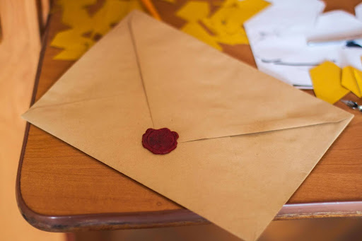

Liefdesbrieven Schrijven
Wil jij leren om iemand echt te vlijen? Doe mee aan de workshop liefdesbrieven schrijven! Het hoeft geen romantisch verlangen te zijn dat je drijft; het kan ook een ode zijn aan een goede docent, of zelfs aan iets abstracts, zoals de stad waar je vandaan komt. Of natuurlijk wel gewoon een ouderwetse liefdesverklaring, waarin je jouw geliefde of crush perfect duidelijk maakt waarom je zo gek op hem of haar bent. Leuk voor singles én mensen met een relatie.
Delen tijdens de workshop mag, maar als je je brief liever privé houdt is dat geen enkel probleem.
Dit is een perfect vriendinnenuitje, maar ook om te vormen tot bedrijfsuitje, bijvoorbeeld wanneer iedereen een liefdesbrief schrijft aan het bedrijf waar je werkt, of een ode aan die leuke collega waarvan afscheid genomen wordt. Deze workshop kan, kortom, in overleg worden aangepast aan jouw behoeften.
Een van de technieken die we gaan gebruiken, is associatief schrijven. Voor 20 minuten schrijf je alles op wat er in je opkomt als je aan jouw onderwerp denkt, om vervolgens in een korte pauze op de door jou geschreven woorden te reflecteren. Zo kom je in korte tijd tot de kern van je onderwerp.
Vragen die centraal staan zijn: wat is een uniek compliment? Hoe beschrijf je je gevoelens op een originele wijze, zodat de ander écht begrijpt wat er in jou omgaat?
Benodigdheden:
Ik neem briefpapier, enveloppen, oost-indische inkt, kroontjespennen en andere leuke toevoegingen mee, maar als je zelf nog mooi briefpapier hebt liggen, zou ik het zeker meebrengen!
Kosten:
1-10 personen: 500 euro
11-20 personen: 600 euro
21 of meer: op aanvraag
Reiskosten (retour vanuit Utrecht)
10-100 km: 50 Euro
100-150 km: 100 Euro
150+ km: op aanvraag
Inschrijven 